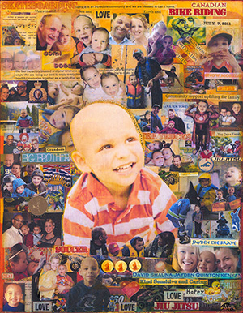

2017 Honourary Captain: Jayden the Brave
July 7, 2011 ~ June 14, 2017

Jayden Buckie Anthony DeSa was eagerly welcomed into this world on July 7, 2011. The first of three boys. Jayden was special from the beginning; He had such a contagious smile and the kindest eyes. Even at a young age it was evident that Jayden had a wise old soul; he was an incredibly caring, gentle and loving spirit.
He was in so many ways your typical little boy; He loved crafts, building and inventing things, science experiments, pillow fighting, wrestle mania, and snowmobiling with his dad. He loved superheros, monster trucks and had a special affinity for shredded hash browns.
He was so proud of his role as a big brother to Quinton and Kenyan, and he excelled at it; He was the best “biggest” brother.
He had a great sense of humour and the most joyful laugh. He had a wonderfully creative and active imagination, and much alike his favourite colour, orange, he was bright and vibrant.
But, Jayden was also a warrior. At 3 years old he was diagnosed with Acute Lymphoblastic Leukemia. Jayden spent three years battling cancer and he never complained, even in the worst moments…and there were all too many. He was resilient and stoic. He faced insurmountable feats with the strength and courage of someone far beyond his years and means, and he did it with an ever-encouraging smile. He was the rock; he was Jayden the Brave.
Despite his short life, Jayden thrived in any circumstance he was given. With an unimaginable amount of confidence, he accepted and embraced the life he was given. He knew that the simple things like playing in the park and bedtime cuddles made him just as happy as anything money could buy. He knew that little moments mean just as much as the big ones. Jayden always found strength to play, to imagine, to believe . . . and to be thankful.
Jayden passed away June 14, 2017 at the age of 5. We know he is safe in God’s arms, and that he is finally able to be free of all the burdens and pains he endured. It would be easy at a moment like this to focus on all we’ve lost- a future without our warm, curious, enthusiastic and spirited little boy whose love for life and others knew no bounds.
We can remember that he suffered, that he struggled, and that he passed away far too young. Or, we can remember that he laughed often, he fought bravely and no matter, he loved with all his heart. We choose to remember Jayden’s beautiful light and spirit, especially in these dark times.
In the ever-wise words of Dr. Seuss; please “Don’t cry because it’s over, smile because it happened”
We love you, Jayden the Brave - always and forever.
The Desa Family
Shauna, David, Quinton, Kenyon and Jayden
2016 Honourary Captain -
Lindsey Lourenco the Warrior
July 18, 1994 ~ March 14, 2013
Lindsey the Child
Lindsey Lourenco and her identical twin, Sadie, were born on July 18, 1994. Born too early and far too tiny, her early days were spent in the ICU. Lindsey fought for every breath and she was weeks old before she had a name; somehow, no name was good enough.
Whether playing, fighting or getting into mischief, Lindsey and Sadie became inseparable. She and Sadie were a set, not individuals. They looked the same and had the same tastes, desires, hobbies, and friends.
Lindsey and Sadie never sat still unless it was to watch the same Disney movie over and over. Life was Girl Guides, piano, choir, swimming, skating, and dancing. Eventually, it was just dance. Lessons, festivals, costumes, and recitals made wonderful years. Summers were spent camping, fishing, swimming, and boating - two sun-kissed pony-tailed girls enjoyed the best of times.
In the summer of 2007, the girls had just finished Grade 7. They were on their first family trip to Portugal when Lindsey became frighteningly ill. The hospital in Lisbon diagnosed her with Acute Lymphoblastic Leukemia. The dream vacation ended with Lindsey being air-ambulanced from Portugal to BC Children’s Hospital. Life would never be the same.
Cancer. Who imagines a child getting cancer? But some do, and it's evil, cruel and heartbreaking.
Lindsey the Fighter
Cancer treatment for kids is much more intense than cancer treatment for adults. Chemotherapy made Lindsey very sick. She missed her first pivotal year of high school which robbed her of the glorious and awkward experiences that change little girls into teenagers. This is when we began to see Lindsey the Fighter.
In constant fear and pain, she always smiled and made her it her job to make everyone around her feel better. When Lindsey started Grade 9 she made up for lost time. She missed several days a week for chemo, but if she could make it back to school for even one class, she went to school. She wanted the full high school experience - the good and the bad. She never wanted special treatment. And she danced. She danced hard and loved it.
In Grade 10, just a few months after her maintenance chemo ended, Lindsey relapsed. The cancer was back, and it was bad. Lindsey actually felt guilty that she was going to “put the family through cancer again.” She apologized for having cancer! More chemotherapy, stronger chemotherapy, intense brain and full body radiation and a bone marrow transplant that kept her isolated for months and months. Her Sweet Sixteen birthday was spent in an isolation room hooked up to noisy, beeping machines. She had no hair, no immunity, no strength, no appetite, limited mobility and few visitors. Hard to imagine anything worse, but it can always get worse.
All the steroids and other treatments were killing her bones, a disease called AVN (a vascular necrosis). She was in constant pain, tired easily and was confined to a wheelchair. The treatment to cure the cancer was making living unbearable.
When Sadie was in Grade 12, Lindsey’s cancer came back for the third time. Her options were severely limited. There would be no focus on parties, new friends, university applications or graduation preparations. Her first round of chemo put her in the ICU and her family was faced with end-of-life decisions and preparations. Lindsey was dying. Nothing more could be done.
Lindsay the Warrior
This was when Lindsay the Fighter turned into Lindsey the Warrior. Her courage and strength was matched only by her will to live. She made herself well enough to graduate from high school and have a month at home, but when the cancer got worse, Lindsey made the brave decision to end all treatment. She stopped all drugs except pain meds and squeezed friends, family and fun into so little time. Eventually, she moved from BC Children’s Hospital to Canuck Place for her end-of-days.
Lindsey the Warrior battled and beat leukemia for 5½ years. Sick as she was, she graduated with 1st Class Honours after missing 2-1/2 years of high school. In 2012, she was BC Children’s Hospital Champion Child. As an ambassador for the hospital, she spoke at many events to raise awareness and funds for the hospital.
She also volunteered at the hospital and mentored other teens with cancer through BC Children’s Oncology Teen Group and as a camp junior leader at Camp Goodtimes. She came up with the idea of “Cakes for Miracles” at the Lourenco family’s Dairy Queen which donated $1 to BC Children’s Hospital for every cake sold. “Cakes” became a nation Dairy Queen campaign that raised hundreds of thousands of dollars for Canadian children’s hospitals.
A few days before Lindsey’s death, she was honoured with the Coast Capitol Credit Union Courage to Come Back Award. She inspired all her knew her with her good works despite terrible physical and mental hardship, yet she was modest about her achievements and never let people know how much she suffered. Lindsey made her life worthwhile even it was far too short.
The tragedy is that she wanted to do much more. She wanted to become a nurse so she could help other children and families. She wanted to improve equipment and cancer treatment at BC Children’s. She wanted more time for her first kiss, her first love, and time to dance, drive, and be a mother.
Lindsey took her last breath with her mother, father and precious sister Sadie at her side on March 14, 2013. She was 17 years old.
Lindsey’s maternal grandfather was a Norwegian fisherman who fished herring and helped out at the herring sale many years ago. Lindsey, like her mother before her, was fascinated as he cleaned, salted and pickled the herring. It is a special gift and a thrill to the Lourenco family to have Lindsey named as an Honorary Captain of the 2016 Herring Sale.
The Lourenco Family
Tessa Elisabeth Beauchamp
February 21, 1993 ~ January 27, 2012
Tessa was born on February 21, 1993. In 2008, she was diagnosed with rhabdoid meningioma, an extremely rare brain tumor.
Tessa was an inspiration to anyone that met her.
Even when she was in the middle of radiation treatments and feeling very ill, Tessa always smiled and asked people how they were doing. Tessa never complained and never gave up the fight.
Tessa had an infectious laugh and a deep raspy voice that should have made her a great singer, but it didn’t. Though she knew she had a terrible voice, she would sing anyway.
Tessa especially loved babies and dogs. Her greatest gift was her ability to make friends wherever she was. She was extremely loyal and kind, so people of all ages were naturally drawn to her.
Her two best friends, Cecile and Athena, said it best:
“You graced the world with your beauty,
not only on the outside,
but especially inside…
Your laugh was contagious
and half the time
we would all end up laughing
at your laugh…
The power of your smile
would light up any room,
brighten any day,
and we will treasure your memory forever.”
After a four year battle with cancer, Tessa passed on January 27, 2012. She was twenty‐four days shy of her 19th birthday.
Tessa loved and embraced life; she is missed by all who knew her.
The Beauchamp Family
Nicole Kristine Eidsvik
March 29, 1994 ~ November 22, 2011

Nicole was born on March 29, 1994. In August 2008, she was diagnosed with Stage IV alveolar rhabdomyosarcoma. Her journal speaks for her:
September 1, 2008 at home
My problems are not that catastrophic or scary, so my experiences in the last few days are pretty new to me. I have been diagnosed with cancer. Yeah, shocked? So was I... The hard part is telling people. Like what do you say? Yup, I’ve got cancer, what’s up with you?!?! I have no idea how to tell people. I’m learning a lot about people though, which is that most people are kind, caring and amazing. Support has been flowing in from everywhere, and my church has been really great too. But I don’t feel like thinking about it right now, or anything.
January 2, 2010 at BC Children’s Hospital
I don’t know why I am still here, why I survived when other good kids died, but I’m going to make the most of the rest of my life. It’s important to always remember to view my life as a gift, so I don’t start taking things for granted. I got my final scans back by the way, they came back clear. So I guess the only thing left to say is: "Welcome to normalcy."
Cancer returned in August 2010
September 28, 2011 at Quest University
The weather today seems to be celebra-ting with us Quest students at the end of our block. I feel very satisfied with our Cornerstone class, I got a lot out of it. It just feels good finishing something... It bothers me wondering about how much time I have left, whatever it is, I feel it couldn't possibly be enough. Other stu-dents with their plans extending years ahead of them don't know how lucky they are. But the sun is warm and beautiful on my skin and I will get to see [my dog] Gromit tonight; tonight is a night for celebrating.
October 20, 2011 at Quest University
My body's holding up. Sometimes I feel like a scarecrow precariously held together with straw and sticks. How long can we hold Nicole together? I joke, but it scares me.
After 70 weeks of chemo, radiation and surgery in her three year battle with cancer, Nicole died on November 22, 2011. She was seventeen.
Emily Deanne Inglis
February 19, 1990 ~ June 1, 2002
When Emily was nine, she was diagnosed with neuroblastoma. She battled cancer for three years with humour and tenacity.
“When we found out that her battle with cancer was coming to an end, I struggled with how I would tell her. Our social worker at Children’s offered suggestions on how we might feel comfortable in telling her this tragic news. One thing she came up with was the story of Waterbugs and Dragonflies. On the night I broke the bad news, I told her the story. That was only a couple of weeks before she passed away. On the morning after she died and we had come home from Canuck Place, I went outside to sit on our deck for a few minutes alone. It was then that she sent me my first dragonfly. It swooped all around me for a minute or so and then flew away over our roof. I ran inside to tell John that she was telling us she was OK. That summer of 2002 we had one big dragonfly come into our backyard over and over again to sun itself on some big rocks in our garden. It was very comforting.”
“On my parent’s 60th wedding anniversary, my family was gathered for the party, so my brother hired a photographer. We were in a nice park in Summerland overlooking Okanagan Lake. I was fine with all the group shots, pictures with my parents, etc. but I didn’t want to do the family photo because we hadn’t had one taken since losing Emily more than five years earlier. John said we should do it because this was our family now and what message would we be giving Emily’s sister Alison if all the other families did it and not us. Reluctantly I had to agree.
We waited until the end and when it was finally our turn, just as the photographer was getting us all set up, the dragonfly landed on Alison. She was standing at the time and we took pictures in many poses, moving all around then sitting down and getting back up again, but the dragonfly did not fly away. That dragonfly stayed until every family photo was taken before it flew away. It was Emily’s message that it was OK to take the pictures. Her spirit was there with us. I am not a religious person but I believe that her her spirit is always here with us. As you can imagine, not one day has gone by since we lost her that we do not think of her. She will be with us forever.”
The Inglis Family